| Index |
| 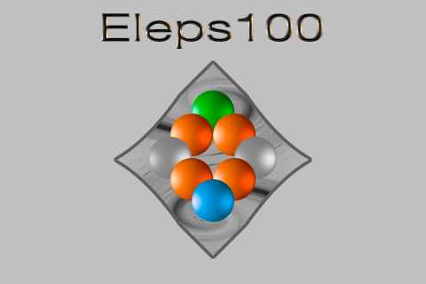 |
| ◎ | It is board game for two people
for iPhone, iPodTouch. |
| ◎ | About Eleps100 Eleps was abbreviation of Electron Pieces, and the electron which can be added, distributed, arranged, moved and acquired as a common unit in any place time,100 pieces were prepared by having made it into the common piece supposing the piece of the character which can perform setup, acquisition, cooperation, and distribution in common, and the title name of Eleps100 was attached as a game aiming at acquisition of the piece. |
| ◎ | The fundamental game method ・The player 1 is the first move. ・The player 1 piece is specified as the point with which the common piece on the board is specified, and the common piece is acquired. ・The number of the common piece becomes the score of player 1. ・Furthermore, four common pieces are specified as the non-specific point on the board. ・The player 2 also performs the same specification as the player 1 by player 2 piece and common piece. ・The above-mentioned specification is repeated and, finally the player with many scores becomes a victory. |
| ◎ | [1×4,2×4,3×8,4×12,5×4,6×2;2×4×12;100] [(Number of connections)×(Number of points),,;(Competition number)x(Numberof common pieces)x(Specified number);(Number of all common pieces)]) On the board, there are 4 points with 1 connecting points, 4 points with 2 connecting points, 8 points with 3 connecting points, 12 points with 4 connecting points, 4 points with 5 connecting points, and 2 points with 6 connecting points. Two players perform 12 times of the specification of four common pieces. There are 100 common pieces in total. |
| ◎ | Corresponding to the high resolution. (Retina-display) |
| ◎ | The current version is 1.5. |
| ◎ | Depending on the model of the device, the thinking part of the computer, and then adjust the parameters.(Ver.1.1) |
| ◎ | It corresponded to the 4 inches of Retina display of iPhone5 and iPod touch(5th generation).(Ver.1.2) |
| ◎ | To change the menu screen and added to the information screen.(Ver.1.3) |
| ◎ | It became correspondence of iOS6〜iOS7.(Ver.1.4) |
| ◎ | It became possible to choose the piece of the first to go into attack.(Ver.1.4) |
| ◎ | It became possible to set up the score on a board at random.(Ver.1.4) |
| ◎ | The game screen was corrected.(Ver.1.5) |
| 1.
The game screen before a game start |
2.
The game screen where the player 1 specified player 1 piece |
3.
The game screen where the player 1 specified 4 common pieces |
4. The game screen where the player 2 specified player 2 piece | 5. The game screen where the player 2 specified 4 common pieces |
| 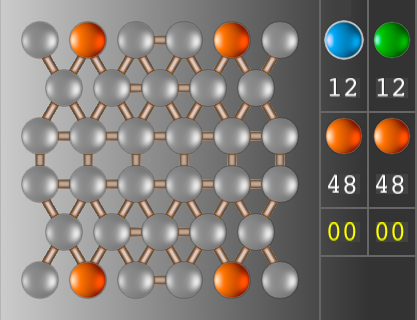 | 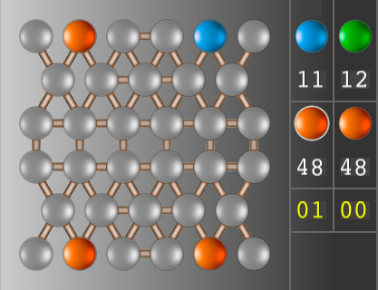 |
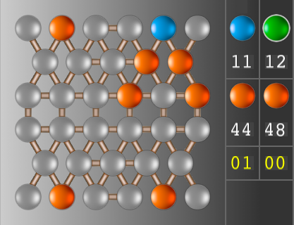 |
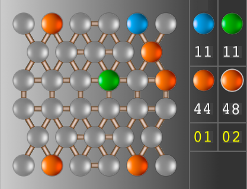 |
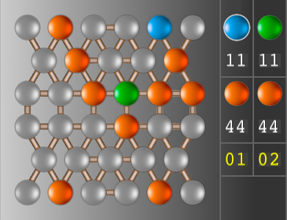 |
| 34
points are shown in the board and the common piece is set as 4 points. |
By
touching a point with the common piece on the board, player 1 piece
is specified and the number of player 1 piece decreases one from 12
to 11. |
A
common piece is touched by four-piece continuation at the non-specific
point on the board. |
The player 2 piece specified as the 4th and the 3rd from the upper row
from the left column. The score of player 2 becomes 2 by
acquiring two common pieces. ※１ |
A common piece is touched by four-piece continuation at the non-specific point on the board. |
| 1. The game screen where the player 1 specified player 1 piece | 2. The game screen where the player 1 specified 4 common pieces | 3. The game screen where the player 2 specified player 2 piece | 4. The game screen where the player 2 specified 4 common pieces | 5. The end screen of the game
after scoring |
| 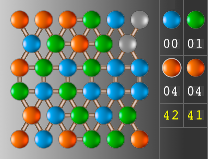 |
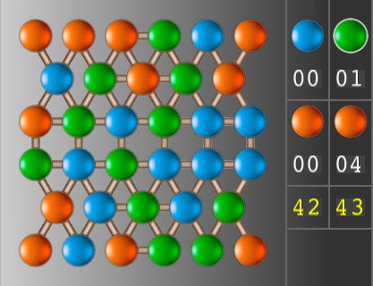 |
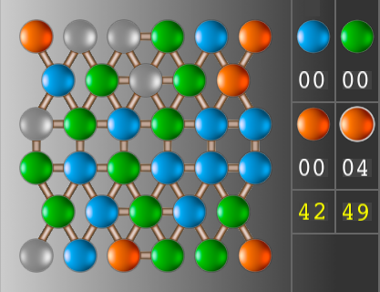 |
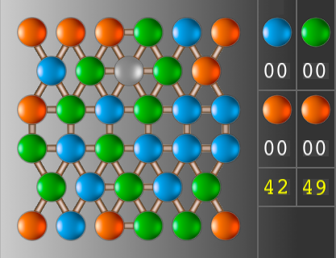 |
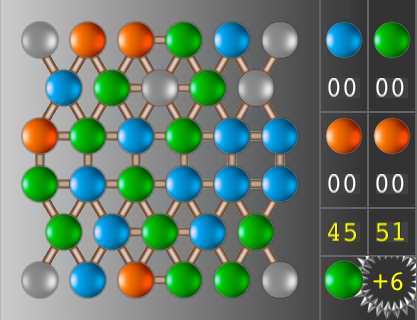 |
| There are two non-specific
points on the board. |
Since the non-specific point which can be specified is two points, the two remaining common piece serves as the score of player 2. | The player 2 piece specified as the 1st and the 5th from the upper row from the left column. The score of player 2 becomes 49 by acquiring six common pieces. | A common piece is touched by four-piece continuation at the non-specific point on the board. | By
touching the character of 'Scoring', the score is calculated. Three
common pieces surrounded by player 1 piece and two common pieces
surrounded by player 2 piece are added to a score of the player
1 and the player 2. The score of the player 2 is a lot of 6, so player
2 piece and +6 is displayed, and it is shown that the player 2 won. ※２ |
| 1. The game screen before the player 2 specifies player 2 piece |
2. The game screen where the player 2 specified player 2 piece |
3. The game screen where the player 2 specified four common pieces |
4. The end screen of the game
after scoring |
| 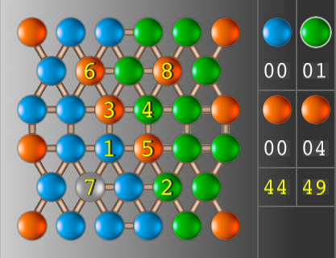 |
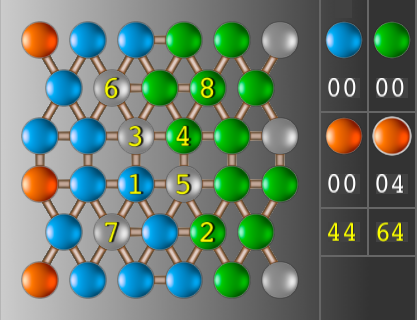 |
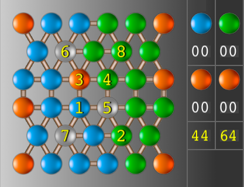 |
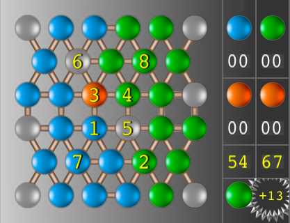 |
| The numerical value of 1-8 is
set as the predetermined place at random. |
The player 2 piece specified as the 4th and the 2nd from the upper row
from the left column. By 7 of the common piece and 8 of setting on the
point, Total of 15 are added to a score of player 2 and are
displayed with 64. |
A common piece is touched by four-piece continuation at the non-specific point (a numerical setting is included) on the board. | By
touching the character of 'Scoring', the score is calculated. The score
of player 1 adds 10 in total by 3 of the common piece surrounded
with player 1 piece, by 7 of setting on the point, and it
becomes 54. The score of player 2 adds 3 common pieces
surrounded by player 2 piece, and becomes 67. The score of the player 2 is a lot of 13, so player 2 piece and +13 is
displayed, and it is shown that the player 2 won. ※２ |
| 1. The game screen before the player 2 specifies player 2 piece | 2. The game screen where the player 2 specified player 2 piece | 3. The game screen where the player 2 specified four common pieces | 4. The end screen of the game after scoring |
| 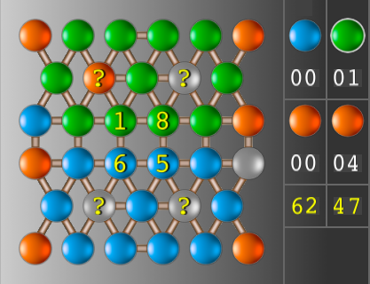 |
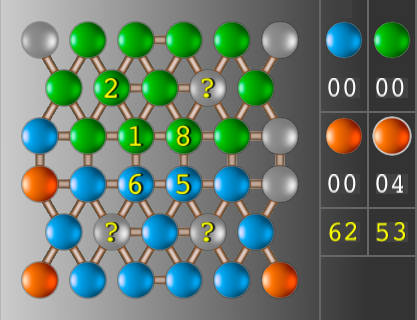 |
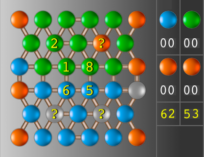 |
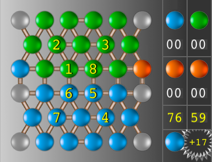 |
| Because the numerical value of
1, 5, 6, and 8 is displayed by the point on the board, it can expect
that ? is 2, 3, 4, and 7. |
The player 2 piece specified as the 2nd and the 2nd from the upper row from the left column. It turns out that 2 was set as ?. The score adds 6 in total by 4 of the common piece, by 2 of setting on the point, and it becomes 53. | A common piece is touched by four-piece continuation at the non-specific point (? setting is included) on the board. | By
touching the character of 'Scoring', the score is calculated. The score
of player 1 adds 14 in total by 3 of the common piece surrounded
with player 1 piece, by 7 and 4 of setting on ?, and it becomes 76.
The score of player 2 adds 6 in total by 3 of the common piece
surrounded with player 2 piece, by 3 of setting on ?, and it
becomes 59. The score of the player 1 is a lot of 17, so player
1 piece and +17 is displayed, and it is shown that the player 1 won. ※２ |
| ○ |
When the player 1 specifies player 1 piece, the score which the player 1 acquires by player 1 piece, and the score which the player 2 acquires by player 2 piece after specifying four common pieces are expected. The difference specifies the point which is added to the score of player 1. In the case of player 2, it is similar. |
| ○ | When the player 1 specifies four common pieces, the score which the player 2 acquires by player 2 piece after specifying four common pieces, and the score which the player 1 acquires by player 1 piece after specifying four common pieces are expected. The difference specifies the point which is added to the score of player 1. In the case of player 2, it is similar. |